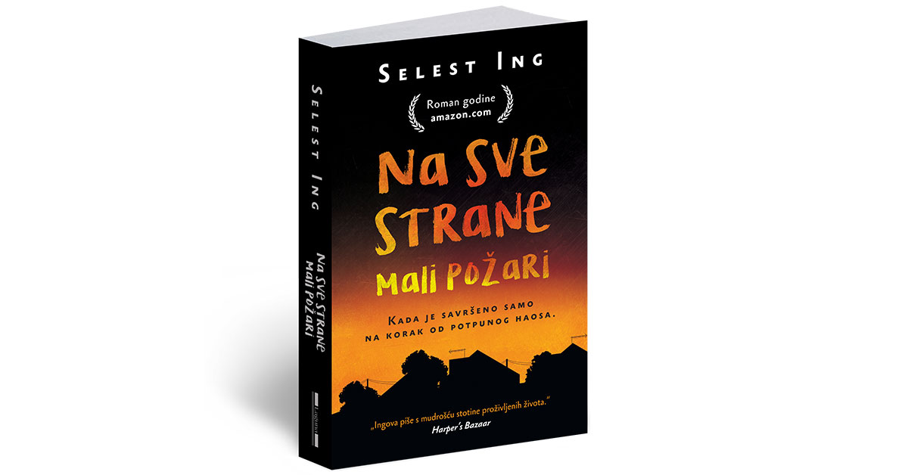
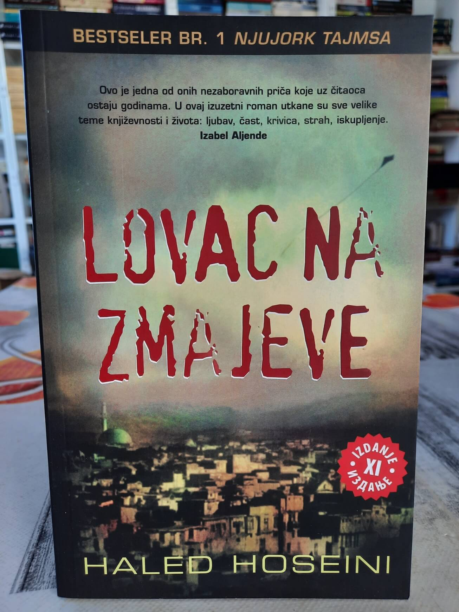

Dobrodošli u moj mali kutak posvećen svetu knjiga! Ovaj sajt je mesto gde želim da podelim svoju strast prema književnosti i ispričam vam o tri knjige koje su me duboko dirnule i inspirisale.
Jedna od najlepših stvari u životu jeste otkriti knjigu koja će vam zauvek promeniti perspektivu i probuditi strast prema čitanju. Za mene, ta knjiga je bila "Čovek po imenu Uve". Kroz reči Fredrika Bakmana, upoznala sam se sa likom Uvea, starim čovekom čiji je svet izgubio sjaj nakon gubitka supruge. Ali njegova priča o oživljavanju i neočekivanim prijateljstvima podsetila me na moć priče da dotakne srca i probudi emocije. "Čovek po imenu Uve" postala je moja literarna ljubav na prvi pogled. Ova knjiga me naučila da iza svakog lica i svake priče postoji duboka ljudska dimenzija, često sakrivena ispod površine rutine i navika. Kroz smeh i suze koje sam doživljavala čitajući o Uveovim avanturama, shvatila sam koliko knjige mogu biti moćne u prenošenju dubokih emocionalnih poruka. Međutim, dok je "Čovek po imenu Uve" bila ona prva knjiga koja je otvorila vrata mom srcu za čitanje, jedan drugi serijal knjiga od istog autora je postao moj ultimativni favorit. Serijal koji obuhvata tri knjige - "Medvedgrad", "Mi protiv vas" i "Pobednici". "Medvedgrad" me je ponovno vratio u Bakmanov svet, ali ovoga puta u mali, idilični švedski gradić. Kroz likove i njihove priče, osetila sam toplinu zajednice, prijateljstva i međusobne podrške. Ova knjiga me naučila da su mala mesta često dom najvećih srca. Bakmanova sposobnost da stvori likove sa kojima se možemo poistovetiti i živeti njihove avanture čini ga jednim od najdarovitijih savremenih pisaca.
Knjiga "Na sve strane mali požari" jednostavno me je osvojila i preplavila osećajem da živim u šarmantnom predgrađu Šejker Hajts. Kroz svaku stranicu ove knjige, činilo se da sam postala deo tog malog sveta sa svojim stanovnicima, njihovim pričama i svakodnevnim izazovima. Dinamika dveju porodica, postala je deo mog svakodnevnog života. Svaki trenutak tuge ili radosti koji su ovi likovi proživeli, doživela sam zajedno s njima. Emotivna povezanost s pričom bila je tako duboka da sam se često zatekla kako tugujem ili se radujem sa njima, kao da su stvarni ljudi. Osećala sam kako mi srce brže kuca dok sam pratila njihove avanture i prepreke koje su savladavali. Šejker Hajts postao je stvaran za mene, sa svojim ulicama, kućama i stanovnicima. Knjiga me vodila kroz svet koji se činio poznatim i bliskim, a opet dovoljno intrigantnim da me drži u neizvesnosti. Svaki neočekivani preokret i svaka duboka emotivna scena činili su ovu knjigu nezaboravnom. "Na sve strane mali požari" nije samo knjiga, već iskustvo koje sam živela zajedno sa likovima. Knjiga me je podsetila na to koliko je književnost moćna u stvaranju veza između čitalaca i priča koje čitamo. Ostaće zauvek urezana u mom srcu kao jedno od najdragocenijih književnih putovanja koje sam doživela.
Knjiga "Lovac na zmajeve" je za mene nešto više od obične knjige. Njeni slojevi dubine, emocionalne raskoši i istraživanje ljudskih osećanja čine je apsolutnim favoritom među svim knjigama koje sam ikada pročitala. Iako je knjiga prožeta patnjom i teškim životnim iskušenjima, ono što je čini posebnom jeste svetlost koja sija kroz nju - svetlost ljubavi, požrtvovanosti, odanosti i u nekim trenucima, neopisive sreće. Prateći sudbinu glavnog junaka Amira i njegovog vernog prijatelja Hasana kroz stranice ove knjige, nisam samo čitala priču, već sam je proživljavala. Ljubav i prijateljstvo koje se rađaju između Amira i Hasana često su me ostavljali bez daha. Njihova duboka veza i odanost jedno drugome su me podsećali na to koliko su ljudske veze dragocene i kako nas ljubav može podići iz najdubljih ponora. Kroz sve nedaće i izazove koje su prolazili, njihova priča mi je pokazala snagu ljudskog duha i volje. Takođe, knjiga me je podsetila da sreća često dolazi iz neočekivanih izvora. U nekim trenucima, iako su junaci prolazili kroz neizmernu patnju, postojala je i neka neopisiva radost . To me naučilo da u najtežim vremenima ne treba gubiti nadu i veru u bolje sutra. "Lovac na zmajeve" je knjiga koja je obogatila moj duh i naterala me da razmišljam dublje o ljudskim odnosima, moralnosti i snazi duha. Njeni likovi i priča ostaju sa mnom kao podsećanje na to kako književnost može oblikovati naše razumevanje sveta i inspirisati nas da budemo bolji ljudi.
